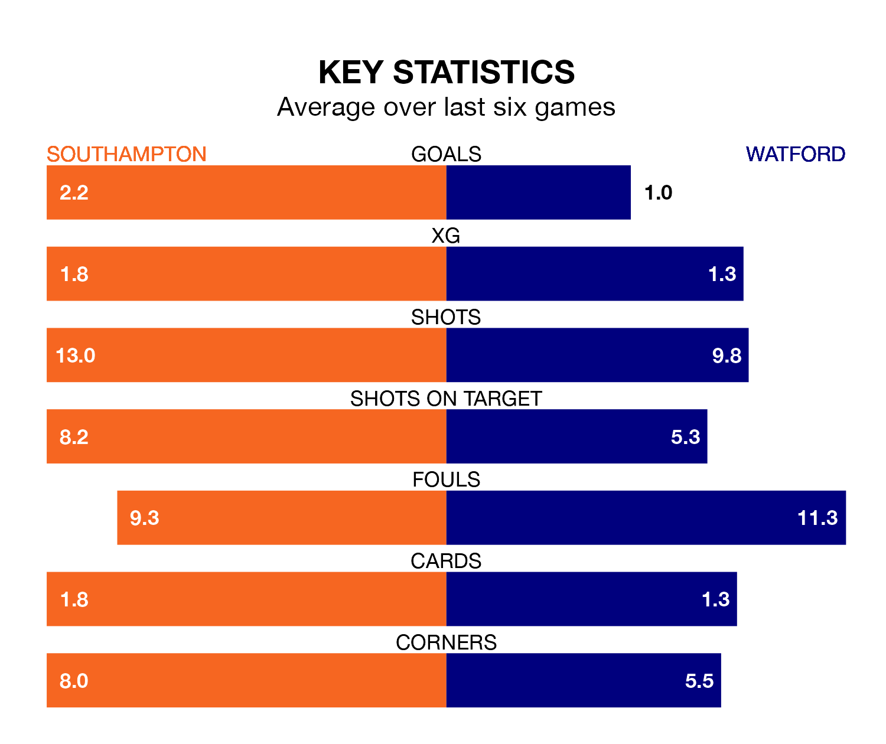

Southampton are heavy favourites to keep all three points at home in Saturday's kick-off against Watford.
The Saints, who sit fourth in EFL Championship with 40 games played, are priced at 1.3 to seal victory at St. Mary's.
Sitting 10 places and 26 points behind them in the table, Watford are 6.2 to win with *Betting Company*, while the draw is at 4.8.
With 78 goals in 40 games so far this season, Southampton are the league's third-highest scorers with 2.0 goals per game. And they are conceding at an average rate, letting in 52 goals at a rate of 1.3 per game.
Watford are also above average scorers, with 1.4 goals per game, compared to a league average of 1.3. They have conceded 1.3 goals per game.
In Adam Armstrong, the Saints have one of the league's most on-form strikers so far this season. He has notched 20 goals in 40 appearances, to sit second in the scoring charts.
His goal rate of one every 166 minutes is slightly quicker than that of Mileta Rajovic, the Hornets's top scorer with a goal every 175 minutes, and a total of 10 goals in 37 games.
In the last 10 years, Southampton and Watford have played each other on 17 occasions. Southampton won seven of them, Watford two, and they drew eight times.
On average, the Saints scored 1.4 goals and the Hornets 0.9 in those matches.
Their last meeting was on February 6, when Southampton won 3-0 at home.
The hosts are in reasonable form in EFL Championship, with three wins and two draws from their last six games.
With a win and four draws over that period, the away team's form is worse – they have taken seven points from 18, compared to Southampton's 11.
Southampton's last match was on Tuesday, a 2-1 win against Coventry City, with Che Adams and Kyle Walker-Peters getting the goals for the Saints.
Watford drew 0-0 with Ipswich Town last time out, on Wednesday.
Saturday's match will be refereed by Joshua Smith, who has taken charge of 23 EFL Championship games so far this season, issuing four red cards and booking 89 players. He has awarded four penalties.
The last Southampton game Smith refereed was a 1-0 home loss to Ipswich Town on September 19. He is yet to oversee a match featuring Watford this season.
Updated: 10:01 (UTC), 12/04/24